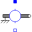
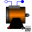
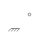
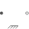

SupportSupport/housing flange of a one-dimensional rotational shaft |
Information
This information is part of the Modelica Standard Library maintained by the Modelica Association.
This is a connector for 1-dim. rotational mechanical systems and models which represents a support or housing of a shaft. The following variables are defined in this connector:
phi: Absolute rotation angle of the support/housing in [rad]. tau: Reaction torque in the support/housing in [Nm].
The support connector is usually defined as conditional connector. It is most convenient to utilize it
- For models to be build graphically (i.e., the model is build up by drag-and-drop
from elementary components):
PartialOneFlangeAndSupport,
PartialTwoFlangesAndSupport.
- For models to be build textually (i.e., elementary models):
PartialElementaryOneFlangeAndSupport,
PartialElementaryTwoFlangesAndSupport,
PartialElementaryRotationalToTranslational.
Used in Components (9)
|  |
Modelica.Electrical.Analog.Basic Electromotoric force (electric/mechanic transformer) |
|
Modelica.Electrical.Machines.Interfaces Partial model for all machines |
|
|  |
Modelica.Magnetic.FundamentalWave.BaseClasses Base model of machines |
|
Modelica.Magnetic.QuasiStatic.FundamentalWave.BaseClasses Base model of machines |
|
|  |
Modelica.Mechanics.Rotational.Interfaces Partial model for a component with one rotational 1-dim. shaft flange and a support used for graphical modeling, i.e., the model is build up by drag-and-drop from elementary components |
|
Modelica.Mechanics.Rotational.Interfaces Partial model for a component with two rotational 1-dim. shaft flanges and a support used for graphical modeling, i.e., the model is build up by drag-and-drop from elementary components |
|
|
PartialElementaryOneFlangeAndSupport2 Modelica.Mechanics.Rotational.Interfaces Partial model for a component with one rotational 1-dim. shaft flange and a support used for textual modeling, i.e., for elementary models |
|
|  |
PartialElementaryTwoFlangesAndSupport2 Modelica.Mechanics.Rotational.Interfaces Partial model for a component with two rotational 1-dim. shaft flanges and a support used for textual modeling, i.e., for elementary models |
|
PartialElementaryRotationalToTranslational Modelica.Mechanics.Rotational.Interfaces Partial model to transform rotational into translational motion |